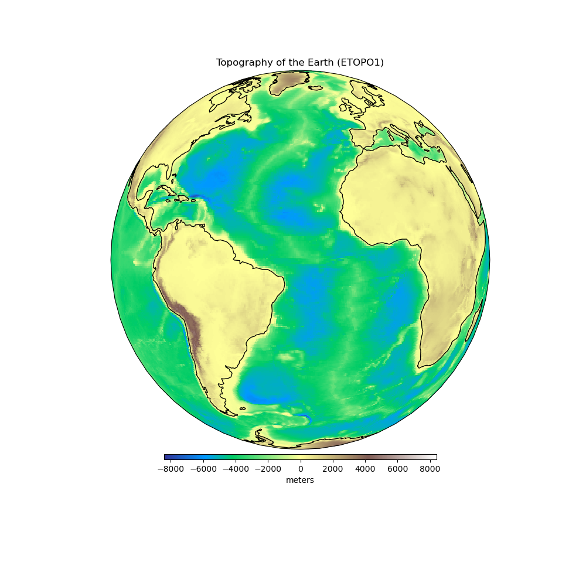

Earth Topography
Note
Click here to download the full example code
Earth Topography¶
The topography and bathymetry of the Earth according to the ETOPO1 model [AmanteEakins2009]. The original model has 1 arc-minute grid spacing but here we downsampled to 0.5 degree grid spacing to save space and download times. Heights are referenced to sea level.
Out:
<xarray.Dataset>
Dimensions: (latitude: 361, longitude: 721)
Coordinates:
* longitude (longitude) float64 -180.0 -179.5 -179.0 ... 179.0 179.5 180.0
* latitude (latitude) float64 -90.0 -89.5 -89.0 -88.5 ... 89.0 89.5 90.0
Data variables:
topography (latitude, longitude) float64 2.762e+03 2.762e+03 ... -4.179e+03
Attributes: (12/31)
generating_institute: gfz-potsdam
generating_date: 2018/12/13
product_type: topography
body: earth
modelname: etopo1-2250
max_used_degree: 1277
... ...
maxvalue: 5.6509528E+03 meter
minvalue: -8.4094822E+03 meter
signal_wrms: 2.4872117E+03 meter
grid_format: long_lat_value
attributes: longitude latitude topography
attributes_units: deg. deg. meter
import cartopy.crs as ccrs
import matplotlib.pyplot as plt
import harmonica as hm
# Load the topography grid
data = hm.datasets.fetch_topography_earth()
print(data)
# Make a plot of data using Cartopy
plt.figure(figsize=(10, 10))
ax = plt.axes(projection=ccrs.Orthographic(central_longitude=-30))
pc = data.topography.plot.pcolormesh(
ax=ax, transform=ccrs.PlateCarree(), add_colorbar=False, cmap="terrain"
)
plt.colorbar(
pc, label="meters", orientation="horizontal", aspect=50, pad=0.01, shrink=0.6
)
ax.set_title("Topography of the Earth (ETOPO1)")
ax.coastlines()
plt.show()
Total running time of the script: ( 0 minutes 0.630 seconds)